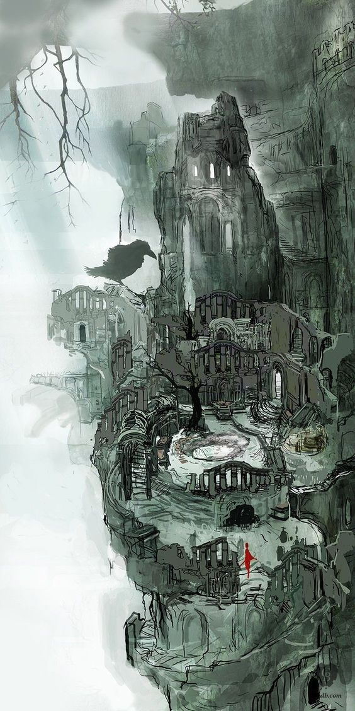

Dark Souls es un juego de rol de acción de 2011 desarrollado por FromSoftware y publicado por Bandai Namco Entertainment.
El objetivo del juego es ir eliminando a los enemigos y jefes finales que se interpongan en tu camino. Para ello existen hogueras, las cuales sirven de punto de control para el jugador, además de varias funciones más (restablecen la salud, los hechizos, el estado general, los Frascos de Estus que recuperan la salud, y sirven para subir de nivel y como un descanso para el jugador, ya que este juego no tiene pausa). Sin embargo, es importante tener en cuenta que una vez que se descansa en la hoguera, los enemigos eliminados por el jugador reaparecerán, excepto los jefes finales o PNJs asesinados. Muy de vez en cuando el jugador se cruza con diversos PNJs que le serán extremadamente útiles, y en muchos casos fundamentales, para avanzar en el juego. Esto es importante ya que atacar a un PNJ lo volverá hostil por lo que resta del juego, y una vez que se mata un PNJ, este no vuelve a aparecer. Las almas son una especie de puntos de experiencia que se obtienen al eliminar enemigos y utilizar ciertos objetos, y sirven como "créditos" para comprar objetos y para subir de nivel
En la Edad Antigua, el mundo era amorfo y estaba envuelto en niebla. Una tierra de riscos grises, árboles gigantescos y dragones eternos. Pero entonces llegó el Fuego. Y con el Fuego, llegó la Disparidad. Calor y frío, vida y muerte, y por supuesto... Luz y Oscuridad. Entonces, ellos surgieron de la oscuridad. Y encontraron las almas de los dioses dentro de la llama. Nito, el primero de los muertos. La bruja de Izalith y sus hijas del caos. Gwyn el Señor de la Luz Solar, y sus leales caballeros. Y el furtivo pigmeo, a menudo olvidado. Con la fuerza de los dioses, desafiaron a los dragones. Gwyn y sus poderosos rayos despellejaron sus escamas pétreas. Las brujas tejieron tormentas de fuego. Nito provocó un miasma de muerte y enfermedad. Y Seath el Descamado traicionó a los suyos, y los dragones desaparecieron. Así comenzó la Edad del Fuego. Pero pronto las llamas se apagarán, y sólo quedará Oscuridad. Ahora solo quedan ascuas, y el hombre ya no ve el sol; tan solo noches eternas. Entre los vivos pueden verse a los que sufren la maldición de la Señal Oscura. Así es. La Señal Oscura de los no muertos. En esta tierra, han reunido a todos los no muertos para llevarlos al norte. Allí los encerrarán hasta que llegue el fin del mundo. Es tu destino... Pero las antiguas leyendas dicen que un día un no muerto será elegido para abandonar el Refugio de los no muertos, en peregrinación a la tierra de los antiguos dioses, Lordran.